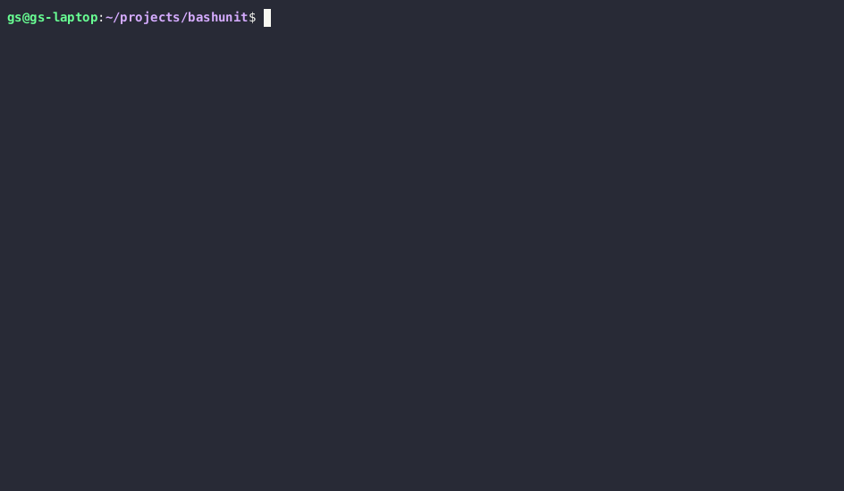
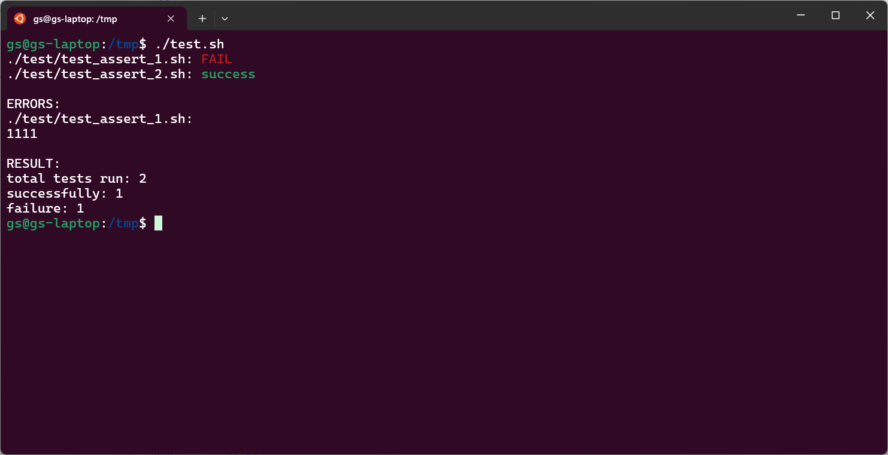

2024-09-20

Создадим главный файл который будет запускать все тесты:
$ touch test.sh
$ mkdir test
$ touch test/test_assert_1.sh
$ touch test/test_assert_2.shТак же создадим поддиректорию в которой разместим файлы с тестами. В итоге, структура директории будет такова:
$ tree ./
./
├── test
│ ├── test_assert_1.sh
│ └── test_assert_2.sh
└── test.sh
1 directory, 3 filesФайлы в которых будем писать тесты будут иметь префикс
test_ в названии и расширение sh. Это нужно
для того чтобы не пытаться запустить всякие вспомогательные для тестов
файлы.
Первое что нам нужно - найти все файлы с тестами в дирректории и поддиректориях:
#!/usr/bin/env bash
for i in $(find . -type f -name "test_*.sh");
do
echo $i
doneПроверим:
$ ./test.sh
./test/test_assert_1.sh
./test/test_assert_2.shОтлично, список файлов у с тестами у нас есть.
Теперь попробуем запустить эти файлы:
for i in $(find . -type f -name "test_*.sh");
do
scrip_dir=$(dirname $i)
script_file=$(basename $i)
(cd $scrip_dir && ./$script_file)
doneКак видно, предварительно делаем переход в каталог расположения файла. Сделано это для того, чтобы все инклуды отсчитывать от файла с тестом а не от запускающего его файла.
$ ./test.sh
./test.sh: 7: ./test_assert_1.sh: Permission denied
./test.sh: 7: ./test_assert_2.sh: Permission deniedНет прав... А ну-ка проверим:
$ ls -l test
total 8
-rw-r--r-- 1 gs gs 18 Sep 19 16:09 test_assert_1.sh
-rw-r--r-- 1 gs gs 10 Sep 19 15:42 test_assert_2.shАга, наши файлы не имеют флага запуска. Мы можем его им проставить, но тогда нам нужно будет на все файлы с тестами ставить этот флаг. Неудобно. Давайте, лучше, внутри нашего интерпретатора запустим ещё один и скажем ему исполнить эти файлы:
7c7
< (cd $scrip_dir && ./$script_file)
---
> (cd $scrip_dir && bash ./$script_file)
9d8
< Предварительно напишем в эти файлы чего-нибудь:
$ echo "echo 111" > test/test_assert_1.sh
$ echo "echo 222" > test/test_assert_2.shА теперь запустим:
$ ./test.sh
111
222Теперь, хорошо бы указывать успешно у нас прошёл тест или нет. Код
возврата последней операции можно получить через $?.
Добавим проверку кода возврата и вывод уведомления об успешности
теста:
7a8,13
> if [ $? -ne 0 ];
> then
> echo "$i: FAIL"
> else
> echo "$i: success"
> fiА в один из файлов добавим код возврата неудачи:
$ echo "exit 1" >> test/test_assert_1.shТеперь запустим наш тест:
$ ./test.sh
111
./test/test_assert_1.sh: FAIL
222
./test/test_assert_2.sh: successКак видим, у нас выполнились оба теста несмотря на то, что первый
тест должен был бы прекратить выполнение скрипта вызовом
exit 1 но это не произошло потому что его мы запустили в
отдельном интерпретаторе (bash ./$script_file).
Что ж, теперь бы хотелось сделать так чтобы выводы тестов были ниже списка результатов запуска чтобы не мешать всё в одну кучу:
2a3,6
> SUCCESS_COUNTER=0
> FAIL_COUNTER=0
> TEST_FILE_COUNTER=0
>
5a10,11
> TEST_FILE_COUNTER=$(( TEST_FILE_COUNTER + 1 ))
>
14c20,21
< echo "$i: FAIL"
---
> FAIL_COUNTER=$(( FAIL_COUNTER + 1 ))
> echo -e "$i: FAIL"
16c23,24
< echo "$i: success"
---
> SUCCESS_COUNTER=$(( SUCCESS_COUNTER + 1 ))
> echo -e "$i: success"
25a34,38
>
> echo "RESULT:"
> echo "total: $TEST_FILE_COUNTER"
> echo "successfully: $SUCCESS_COUNTER"
> echo "failure: $FAIL_COUNTER"Посмотрим результат:
$ ./test.sh
./test/test_assert_1.sh: FAIL
./test/test_assert_2.sh: success
ERRORS:
./test/test_assert_1.sh:
1111
RESULT:
total: 2
successfully: 1
failure: 1Отлично!
Осталось только добавить фильтр позволяющий запускать только определённые файлы чтобы, при необходимости, не гнать все тесты:
2a3,4
> TEST_FILE_FILTER=$@
>
9a12,25
> if [ "$TEST_FILE_FILTER" != "" ]; then
> IS_ACCEPT=0
> for filter in $TEST_FILE_FILTER; do
> if [[ "$i" =~ $filter ]]; then
> IS_ACCEPT=1
> break
> fi
> done
>
> if [ "$IS_ACCEPT" -eq 0 ]; then
> continue
> fi
> fi
>Запускаем:
$ ./test.sh assert_[2-9]
./test/test_assert_2.sh: success
ERRORS:
RESULT:
total tests run: 1
successfully: 1
failure: 0Как видно, мы можем писать тут регулярные выражения. Есть только одна проблема:
$ ./test.sh some_string
ERRORS:
RESULT:
total tests run: 0
successfully: 0
failure: 0У нас показывается строка ERRORS:, чего быть не должно.
Добавим проверку списка ошибок:
44,47c44
< echo
< echo "ERRORS:"
< for i in "${!FAIL_OUTPUT[@]}"; do
< echo -e "${i}:\n${FAIL_OUTPUT[$i]}"
---
> if [ ${#FAIL_OUTPUT[@]} -gt 0 ]; then
49c46,51
< done
---
> echo "ERRORS:"
> for i in "${!FAIL_OUTPUT[@]}"; do
> echo -e "${i}:\n${FAIL_OUTPUT[$i]}"
> echo
> done
> fiТеперь всё хорошо:
$ ./test.sh some_string
RESULT:
total tests run: 0
successfully: 0
failure: 0Что ж, теперь, я думаю, можно навести немного лоска. Добавим цвета в вывод:
4a5,8
> COLOR_FAIL='\033[0;31m' # Red
> COLOR_SUCCESS='\033[0;32m' # Green
> COLOR_NC='\033[0m' # No Color
>
37c41
< echo -e "$i: FAIL"
---
> echo -e "$i: ${COLOR_FAIL}FAIL${COLOR_NC}"
40c44
< echo -e "$i: success"
---
> echo -e "$i: ${COLOR_SUCCESS}success${COLOR_NC}"
Почти всё готово! Остался только один момент - каждый раз сравнивать значения и если они не соответсвуют ожиданиям писать сообщение и делать выход немного утомительно. Т.е. у нас во всех тестах будет такая конструкция:
...
if [ ... ]; then
echo "some error message"
exit 1
fi
...Добавим вспомогательную функцию assert которая будет
испонять этот шаблонный код.
assert() {
message=${3:-""}
local diff_value
set -o pipefail
diff_value=$(diff <(echo "$1" ) <(echo "$2") | sed -z 's/\n/\\n/g')
if [ $? -ne 0 ];
then
echo -e "$message:\n$diff_value"
exit 1
fi
}Она принимате три параметра: первые два - сравниваемые значения, третий - сообщение об ошибке, он не обязателен.
Вызывается так:
assert 10 $a "Кол-во чего-то там должно быть 10"Стоит пояснить эти две строки:
set -o pipefail
diff_value=$(diff <(echo "$1" ) <(echo "$2") | sed -z 's/\n/\\n/g')set -o pipefail делает так, что мы получаем последний
ненулевой код завершения в конвеере, иначе, если команда
diff вернёт 1 следующая за ней команда
sed вернёт 0 и мы никогда не узнаем что
значения у нас отличаются: условие if [ $? -ne 0 ]; никогда
не сработает.
Ок, функция у нас есть. Но куда её поместить? Если поместить её в
файл test.sh то она будет не доступна в скриптах с тестами
потому как они запускаются в отдельном интерпретаторе. Остаётся только
поместить её в отдельный файл. Так и поступим:
$ touch utils.shТеперь структура директорий следующая:
$ tree ./
./
├── test
│ ├── test_assert_1.sh
│ └── test_assert_2.sh
├── test.sh
└── utils.sh
1 directory, 4 filesНо, совершенно нет никакого желания в каждый тестовый файл подключать наш файл с утилитами. Тогда подгрузим его в shell который исполняет тест!
4a5,6
> CURR_DIR=$(pwd)
>
34c36
< out=$(cd $scrip_dir && bash ./$script_file)
---
> out=$(cd $scrip_dir && bash --noprofile --norc -c "source $CURR_DIR/utils.sh; source ./$script_file")Перепишем наши тесты так чтобы они использовали эту утилиту.
$ echo "assert 1 2 \"1 не равно 2\"" > test/test_assert_1.sh
$ echo "assert 2 2 \"2 не равно 2\"" > test/test_assert_2.shЗапускаем:
$ ./test.sh
./test/test_assert_1.sh: FAIL
./test/test_assert_2.sh: success
ERRORS:
./test/test_assert_1.sh:
1 не равно 2:
1c1
< 1
---
> 2
RESULT:
total tests run: 2
successfully: 1
failure: 1Добавим в каждый из тестов ещё по вызову assert и
посмотрим что будет.
$ echo "assert 3 3 \"3 не равно 3\"" >> test/test_assert_1.sh
$ echo "assert 3 4 \"3 не равно 4\"" >> test/test_assert_2.sh
$ ./test.sh
./test/test_assert_1.sh: FAIL
./test/test_assert_2.sh: FAIL
ERRORS:
./test/test_assert_2.sh:
3 не равно 4:
1c1
< 3
---
> 4
./test/test_assert_1.sh:
1 не равно 2:
1c1
< 1
---
> 2
RESULT:
total tests run: 2
successfully: 0
failure: 2Тут мы видим две вещи:
assert не было пройдено то тест на
этом завершается, иначе его выполнение продолжитсяЕсли первый пункт нас полностью устраивает то со вторым надо что-то делать.
56c56
< done
---
> done | tac$ ./test.sh
./test/test_assert_1.sh: FAIL
./test/test_assert_2.sh: FAIL
ERRORS:
> 2
---
< 1
1c1
1 не равно 2:
./test/test_assert_1.sh:
> 4
---
< 3
1c1
3 не равно 4:
./test/test_assert_2.sh:
RESULT:
total tests run: 2
successfully: 0
failure: 2Ну, почти то что и требовалось, нужно только немного доработать напильником.
Проблема в том, что у tac смотрит на символ перехода на
новую строку, значит нужно сначала все символы заменить на какой-то
другой символ, чтобы для каждого сообщения об ошибке было только одна
строка, а затем всё вернуть как было:
54c54
< echo -e "${i}:\n${FAIL_OUTPUT[$i]}"
---
> echo -e "${i}:\n${FAIL_OUTPUT[$i]}" | sed -z 's/\n/\\n/g'
56c56
< done | tac
---
> done | tac | sed 's/\\n/\n/g'Ну, такое себе, но пока что пойдёт. Проверим:
$ ./test.sh
./test/test_assert_1.sh: FAIL
./test/test_assert_2.sh: FAIL
ERRORS:
./test/test_assert_1.sh:
1 не равно 2:
1c1
< 1
---
> 2
./test/test_assert_2.sh:
3 не равно 4:
1c1
< 3
---
> 4
RESULT:
total tests run: 2
successfully: 0
failure: 2Что ж, кажется, на этом, пока что, можно остановится.
Итак. Сейчас мы имеет минимальную среду для тестирования скриптов на bash, котора может:
Полный код можно посмотреть в этом репозитории.
Следовало бы добавить:
--dry-run--fast-failgreaterThen,
lessThen, ..)В порядке бреда (а почему бы и не "да"?):
Комментарии
Комментарии на GitHub